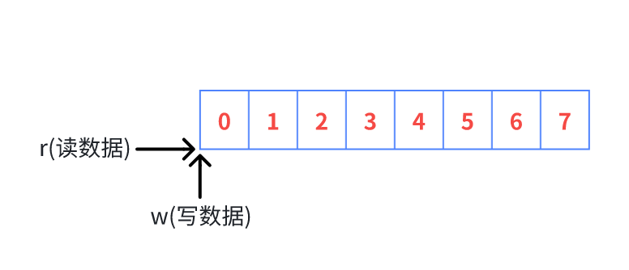
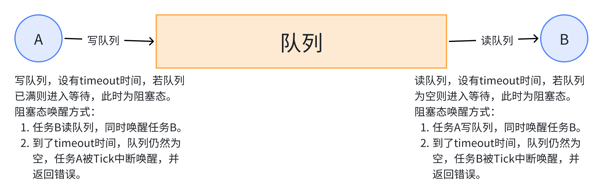
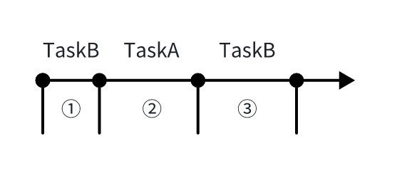
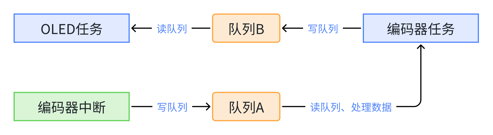
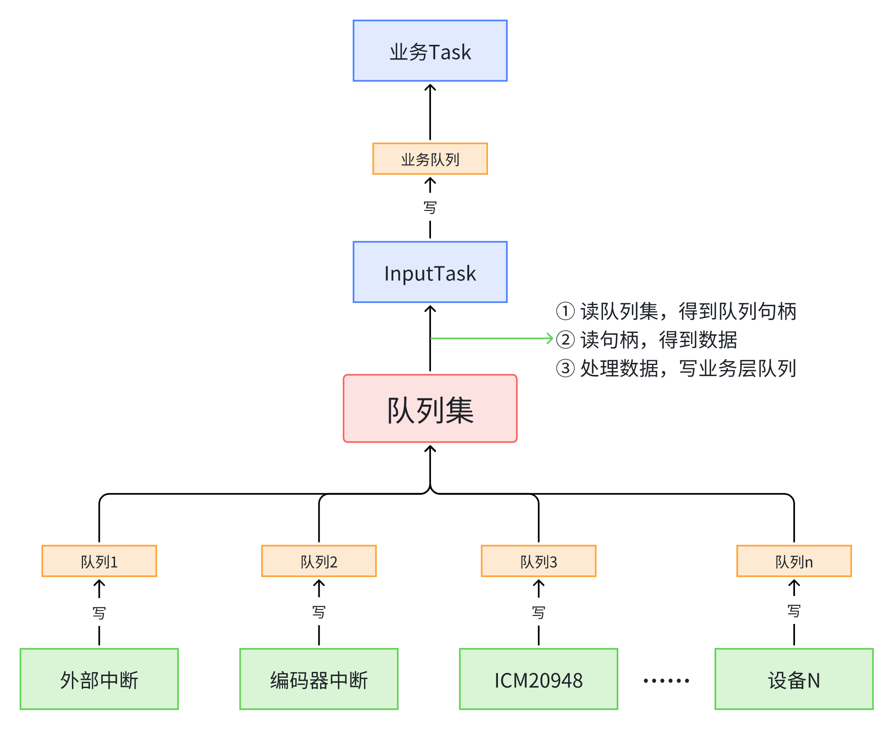
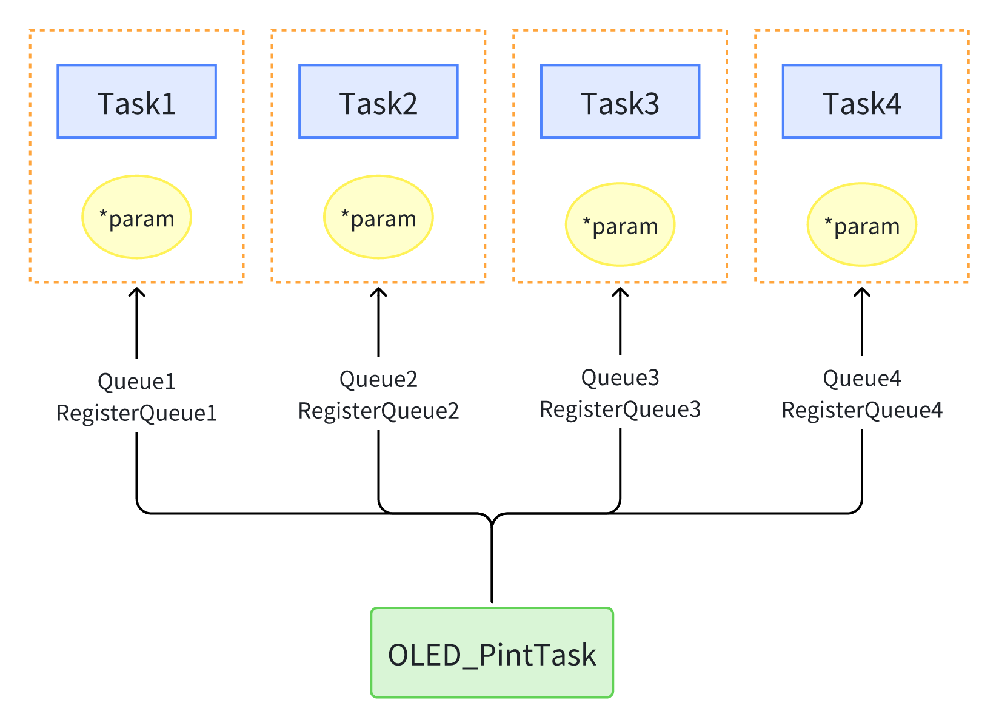

队列
5.1 队列本质¶
5.1.1 环形缓冲区¶
全局变量容易出现的问题已经举例过，而环形缓冲区则不宜出现全局变量类似问题。
| 类型 | 数据个数 | 互斥措施 | 阻塞-唤醒 |
|---|---|---|---|
| 全局变量 | 1 | 无 | 无 |
| 环形缓冲区 | 多个 | 无 | 无 |
| 队列 | 多个 | 有 | 有 |
关于环形缓冲区的读写操作及数据是否满：
- 缓冲区空：r位置 == w位置
- 缓冲区满：下一个w位置 == r位置
- 写数据和读数据均从索引 0 开始
/* 环形缓冲区逻辑示例 */
int buf[8];
int r = 0, w = 0;
int next_w = w+1;
if (next_w == 8) { next_w = 0; }
//写数据
if (next_w != r)
{
buf[w] = value;
w++;
if (w == 8) { w = 0; }
}
//读数据
if (r != w)
{
value = buf[r];
r++;
if (r == 8) { r = 0; }
}

5.1.2 队列的本质¶
队列中，数据的读写本质就是环形缓冲区，在这个基础上增加了互斥措施、阻塞-唤醒机制。
→如果这个队列不传输数据，只调整“数据个数”，它就是信号量(semaphore)。
→如果信号量中，限定“数据个数”最大值为1，它就是互斥量(mutex)。

在队列中，① 有环形缓冲区，用于存放和读取数据。 ② 两个链表(SendList和ReceiveList)，用于指定A（或B）写（或读）时唤醒的任务。
以任务B（读数列）为例，分析两种唤醒时序：
唤醒方式一：
① TaskB读队列，队列为空，进入阻塞态，设有超时时间。
内部变化
创建TaskB进入就绪态，此时TaskB在 就绪链表 (pxReadyTasksLists)；读队列，队列为空，进入阻塞态，此时TaskB在 队列接收链表 (ReceiveList)，同时会入 延时链表 (pxDelayedTaskList)。
② TaskA写队列，同时唤醒TaskB。
内部变化
TaskA并非直接唤醒TaskB，而是在 队列接收链表 (ReceiveList)中找到第一个任务，将其放至 就绪链表 (pxReadyTasksLists)，并从 队列接收链表 (ReceiveList)和 延时链表 (pxDelayedTaskList)中将TaskB删除，我们示例中只有一个TaskB，故就是唤醒TaskB。
③ TaskB执行读队列操作（此时未到超时时间）。

唤醒方式二：
① TaskB读队列，队列为空，进入阻塞态，设有超时时间。
② 一直没有任务写队列，通过Tick中判断达到超时时间，唤醒TaskB。
内部变化
Tick中断会从 队列接收链表 (ReceiveList)和 延时链表 (pxDelayedTaskList)中将TaskB删除，放入 就绪链表 (pxReadyTasksLists)。
5.2 队列函数¶
本节均不提供函数详细参数解释，仅适当提供源码注释，希望读者掌握通过阅读源码学习函数的使用方法。
5.2.1 创建队列¶
队列的创建有两种方法：
动态分配内存
/*
* Creates a new queue instance, and returns a handle by which the new queue
* can be referenced.
*/
QueueHandle_t xQueueCreate(
UBaseType_t uxQueueLength,
UBaseType_t uxItemSize
);
静态分配内存
/*
* Creates a new queue instance, and returns a handle by which the new queue
* can be referenced.
*/
QueueHandle_t xQueueCreateStatic(
UBaseType_t uxQueueLength,
UBaseType_t uxItemSize,
uint8_t *pucQueueStorageBuffer,
StaticQueue_t *pxQueueBuffer
);
5.2.2 复位队列¶
/*
* Reset a queue back to its original empty state. The return value is now
* obsolete and is always set to pdPASS.‘
*
* @param xQueue The handle of the queue being added to the registry. This
* is the handle returned by a call to xQueueCreate().
*/
xQueueReset( QueueHandle_t xQueue );
5.2.3 删除队列¶
/**
* queue. h
* <pre>void vQueueDelete( QueueHandle_t xQueue );</pre>
*
* Delete a queue - freeing all the memory allocated for storing of items
* placed on the queue.
*
* @param xQueue A handle to the queue to be deleted.
*
* \defgroup vQueueDelete vQueueDelete
* \ingroup QueueManagement
*/
void vQueueDelete( QueueHandle_t xQueue )
5.2.4 写队列¶
写队列把数据写到队列头部，也可以写到尾部，同时函数分在任务中使用和在中断中使用两个版本。
在任务中使用：
/* Post an item on a queue. The item is queued by copy, not by reference.
* This function must not be called from an interrupt service routine.
* See xQueueSendFromISR () for an alternative which may be used in an ISR.
*
* @param xQueue The handle to the queue on which the item is to be posted.
*
* @param pvItemToQueue A pointer to the item that is to be placed on the
* queue. The size of the items the queue will hold was defined when the
* queue was created, so this many bytes will be copied from pvItemToQueue
* into the queue storage area.
*
* @param xTicksToWait The maximum amount of time the task should block
* waiting for space to become available on the queue, should it already
* be full. The call will return immediately if this is set to 0 and the
* queue is full. The time is defined in tick periods so the constant
* portTICK_PERIOD_MS should be used to convert to real time if this is required.
*
* @return pdTRUE if the item was successfully posted, otherwise errQUEUE_FULL.
*/
BaseType_t xQueueSend(
QueueHandle_t xQueue,
const void * pvItemToQueue,
TickType_t xTicksToWait
);
/* Post an item to the front of a queue. */
BaseType_t xQueueSendToToFront(
QueueHandle_t xQueue,
const void *pvItemToQueue,
TickType_t xTicksToWait
);
/* Post an item to the back of a queue. */
BaseType_t xQueueSendToBack(
QueueHandle_t xQueue,
const void *pvItemToQueue,
TickType_t xTicksToWait
);
在中断中使用：
/* Post an item to the back of a queue. It is safe to use this function from
* within an interrupt service routine.
*
* Items are queued by copy not reference so it is preferable to only
* queue small items, especially when called from an ISR. In most cases
* it would be preferable to store a pointer to the item being queued.
*
* @param xQueue The handle to the queue on which the item is to be posted.
*
* @param pvItemToQueue A pointer to the item that is to be placed on the
* queue. The size of the items the queue will hold was defined when the
* queue was created, so this many bytes will be copied from pvItemToQueue
* into the queue storage area.
*
* @param pxHigherPriorityTaskWoken xQueueSendFromISR() will set
* *pxHigherPriorityTaskWoken to pdTRUE if sending to the queue caused a task
* to unblock, and the unblocked task has a priority higher than the currently
* running task. If xQueueSendFromISR() sets this value to pdTRUE then
* a context switch should be requested before the interrupt is exited.
*
* @return pdTRUE if the data was successfully sent to the queue, otherwise
* errQUEUE_FULL.
*/
BaseType_t xQueueSendFromISR(
QueueHandle_t xQueue,
const void *pvItemToQueue,
BaseType_t *pxHigherPriorityTaskWoken
);
/* Post an item to the back of a queue. */
BaseType_t xQueueSendToBackFromISR(
QueueHandle_t xQueue,
const void *pvItemToQueue,
BaseType_t *pxHigherPriorityTaskWoken
);
/* Post an item to the front of a queue. */
BaseType_t xQueueSendToFrontFromISR(
QueueHandle_t xQueue,
const void *pvItemToQueue,
BaseType_t *pxHigherPriorityTaskWoken
);
5.2.5 读队列¶
/* Receive an item from a queue.
* This function must not be used in an interrupt service routine.
*/
BaseType_t xQueueReceive(
QueueHandle_t xQueue,
void *pvBuffer,
TickType_t xTicksToWait
);
/* Receive an item from a queue.
* It is safe to use this function from within an interrupt service routine.
*/
BaseType_t xQueueReceiveFromISR(
QueueHandle_t xQueue,
void *pvBuffer,
BaseType_t *pxTaskWoken
);
5.2.6 查询队列¶
/* Return the number of messages stored in a queue. */
UBaseType_t uxQueueMessagesWaiting( const QueueHandle_t xQueue );
/* Return the number of free spaces available in a queue. */
UBaseType_t uxQueueSpacesAvailable( const QueueHandle_t xQueue );
5.3 队列示例¶
5.3.1 单队列¶
外部中断写队列，OLED任务读队列并显示。
freertos.c文件内容：
定义OLED任务读队列：
/* Private application code --------------------------------------------------*/
/* USER CODE BEGIN Application */
void OLED_Queue_Task(void *argument) {
/* 创建队列 */
g_QueueA = xQueueCreate(10, sizeof(OLEDData));
/* 定义结构体 */
OLEDData QueueA_Data_Output;
while (1) {
/* 读队列A */
if ( pdPASS == xQueueReceive(g_QueueA, &QueueA_Data_Output, portMAX_DELAY) ) {
/* 显示队列A数据 */
OLED_ShowNum(0, 0, QueueA_Data_Output.speed, 1, 16);
OLED_ShowStr(16, 0, QueueA_Data_Output.messages, 16);
OLED_ShowNum(0, 2, QueueA_Data_Output.cnt_value, 3, 16);
}
}
}
/* USER CODE END Application */
外部中断写队列：
void HAL_GPIO_EXTI_Callback(uint16_t GPIO_Pin) {
/* 定义变量 */
extern QueueHandle_t g_QueueA;
static int16_t cnt;
/* 定义结构体 */
OLEDData QueueA_Data_Input;
if (GPIO_Pin == GPIO_PIN_2) {
QueueA_Data_Input.speed = cnt % 10;
QueueA_Data_Input.cnt_value = cnt;
strcpy(QueueA_Data_Input.messages, "Writed");
xQueueSendFromISR(g_QueueA, &QueueA_Data_Input, NULL);
cnt++;
}
}
5.3.2 多队列¶
程序流程如下，两个任务两个队列：

定义队列句柄变量：
/* Private variables ---------------------------------------------------------*/
/* USER CODE BEGIN Variables */
// 定义队列句柄
QueueHandle_t g_QueueA = NULL;
QueueHandle_t g_QueueB = NULL;
/* USER CODE END Variables */C
TIM7定时中断，写队列A：
void HAL_TIM_PeriodElapsedCallback(TIM_HandleTypeDef *htim)
{
/* USER CODE BEGIN Callback 0 */
/* 定义变量 */
extern QueueHandle_t g_QueueA;
static int16_t cnt;
/* 定义结构体 */
EncoderData QueueA_Data_Input;
if (htim->Instance == TIM7) {
QueueA_Data_Input.cnt_value = Encoder_Read_CNT(4);
QueueA_Data_Input.speed = QueueA_Data_Input.cnt_value % 100;
strcpy(QueueA_Data_Input.messages, "EncoderGet!");
// OLED_ShowNum(0, 0, QueueA_Data_Input.speed, 4, 16);
// OLED_ShowStr(40, 0, QueueA_Data_Input.messages, 16);
// OLED_ShowNum(0, 2, QueueA_Data_Input.cnt_value, 4, 16);
if (g_QueueA != NULL) {
xQueueSendFromISR(g_QueueA, &QueueA_Data_Input, NULL);
}
}
/* USER CODE END Callback 0 */
if (htim->Instance == TIM6) {
HAL_IncTick();
}
/* USER CODE BEGIN Callback 1 */
/* USER CODE END Callback 1 */
}
OLED和Encoder任务：
/* USER CODE END Header_StartDefaultTask */
void StartDefaultTask(void *argument) {
/* USER CODE BEGIN StartDefaultTask */
/* Infinite loop */
rtMotor_Test();
/* USER CODE END StartDefaultTask */
}
/* Private application code --------------------------------------------------*/
/* USER CODE BEGIN Application */
void OLED_Queue_Task(void *argument) {
/* 定义结构 */
OLEDData QueueB_Data_Output;
while (1) {
/* 读队列B */
if (pdTRUE == xQueueReceive(g_QueueB, &QueueB_Data_Output, portMAX_DELAY)) {
/* 显示队列B数据 */
OLED_ShowNum(0, 0, QueueB_Data_Output.speed, 4, 16);
OLED_ShowStr(40, 0, QueueB_Data_Output.messages, 16);
OLED_ShowNum(0, 2, QueueB_Data_Output.cnt_value, 4, 16);
}
vTaskDelay(200);
}
}
void Encoder_Queue_Task(void *argument) {
/* 定义结构 */
EncoderData QueueA_Data_Output;
OLEDData QueueB_Data_Input;
while (1) {
/* 读队列A */
if (pdTRUE == xQueueReceive(g_QueueA, &QueueA_Data_Output, portMAX_DELAY)) {
/* 处理队列A数据 */
QueueB_Data_Input.cnt_value = (int16_t) (QueueA_Data_Output.cnt_value - 1000);
QueueB_Data_Input.speed = (QueueA_Data_Output.speed) % 10;
strcpy(QueueB_Data_Input.messages, "SendOLED!");
// OLED_ShowNum(0, 0, QueueB_Data_Input.speed, 4, 16);
// OLED_ShowStr(40, 0, QueueB_Data_Input.messages, 16);
// OLED_ShowNum(0, 2, QueueB_Data_Input.cnt_value, 4, 16);
/* 发送队列B */
if (pdTRUE == xQueueSend(g_QueueB, &QueueB_Data_Input, 0)) {
LED_ON();
}
}
vTaskDelay(200);
}
}
/* USER CODE END Application */
声明函数：
/* USER CODE BEGIN FunctionPrototypes */
void OLED_Queue_Task(void *argument);
void Encoder_Queue_Task(void *argument);
/* USER CODE END FunctionPrototypes */
创建队列、任务：
void MX_FREERTOS_Init(void) {
/* USER CODE BEGIN Init */
/* 创建队列 */
g_QueueA = xQueueCreate(10, sizeof(OLEDData));
g_QueueB = xQueueCreate(10, sizeof(EncoderData));
/* USER CODE END Init */
...
/* Create the thread(s) */
/* creation of defaultTask */
defaultTaskHandle = osThreadNew(StartDefaultTask, NULL, &defaultTask_attributes);
/* USER CODE BEGIN RTOS_THREADS */
/* add threads, ... */
xTaskCreate(OLED_Queue_Task, "QueueTask1", 128, NULL, osPriorityNormal, NULL);
xTaskCreate(Encoder_Queue_Task, "QueueTask2", 128, NULL, osPriorityNormal, NULL);
/* USER CODE END RTOS_THREADS */
...
}
Danger
记得把默认任务的栈分配小一点，不然内存不够会导致程序卡死。
5.4 队列集¶
5.4.1 队列与队列集¶
队列集可以实现硬件数据与业务应用分离，即便于添加硬件设备，又易于一直驱动程序：

队列与队列集：
- 创建队列A和队列B
- 创建队列集C
- 将队列A和队列B加入队列集C
- 将数据写入队列A或队列B，队列集中会对应写入队列A或队列B的句柄
- 读队列集得到队列句柄，读队列句柄即可得到数据
5.4.2 队列集函数¶
初始化
在FreeRTOSConfig.h文件中，添加如下配置信息：
/* USER CODE BEGIN Includes */
/* Section where include file can be added */
#define configUSE_QUEUE_SETS 1
/* USER CODE END Includes */
创建队列集
队列集长度 = 所有队列长度和
队列加入队列集
读队列
QueueSetMemberHandle_t xQueueSelectFromSet( QueueSetHandle_t xQueueSet, const TickType_t xTicksToWait )
5.5 队列集示例¶
5.5.1 外部中断¶
外部中断PD2计数自增：
void HAL_GPIO_EXTI_Callback(uint16_t GPIO_Pin) {
/* 定义变量 */
static int cnt=0;
static uint64_t last_time = 0;
/* 定义结构体 */
static xGPIOData GPIO_Queue_Data = {0, 0};
uint64_t current_time = system_get_ns()/1000000;
if (current_time-last_time > 200) {
if (GPIO_Pin == GPIO_PIN_2) {
last_time = current_time;
/* 初始化数据 */
cnt++;
GPIO_Queue_Data.count = cnt;
GPIO_Queue_Data.sum += cnt;
/* 写GPIO队列 */
xQueueSendFromISR(g_GPIO_Queue, &GPIO_Queue_Data, NULL);
}
}
else {
last_time = current_time;
}
}
if (current_time-last_time > 200)为消抖，特别在电机转动时影响很大，建议加上。
定义队列：
/* 定义队列 */
static QueueHandle_t g_GPIO_Queue;
/* 外部文件查看队列句柄 */
QueueHandle_t GPIO_GetQueueHandle(void) {
return g_GPIO_Queue;
}
结构体建议定义在.h文件：
创建队列放在初始化函数，若没有就单独定义一个创建队列函数：
/* 创建GPIO外部中断所需队列 */
void GPIO_QueueInit(void) {
g_GPIO_Queue = xQueueCreate(GPIO_QUEUE_LENGTH, sizeof(xGPIOData));
}
5.5.2 编码器定时中断¶
将定时中断执行的任务封装成一个函数：
/* 编码器中断功能函数 */
void Encoder_Func_IRQ(void) {
/* 定义结构体 */
xEncoderData Encoder_Queue_Data;
/* 初始化数据 */
Encoder_Queue_Data.value = Encoder_Read_CNT(4);
Encoder_Queue_Data.speed = (int16_t)(Encoder_Queue_Data.value % 100);
strcpy(Encoder_Queue_Data.device, "M4");
/* 写Encoder队列 */
xQueueSendFromISR(g_Encoder_Queue, &Encoder_Queue_Data, NULL);
}
定义队列：
/* 定义队列 */
static QueueHandle_t g_Encoder_Queue;
/* 外部文件查看队列句柄 */
QueueHandle_t Encoder_GetQueueHandle(void) {
return g_Encoder_Queue;
}
结构体建议定义在.h文件：
#define Encoder_QUEUE_LENGTH 10
typedef struct {
char device[6];
int32_t value;
int16_t speed;
}xEncoderData;
创建队列放在初始化函数，若没有就单独定义一个创建队列函数：
/* @brief 编码器接口初始化（STM32默认开启，不初始化也可以读编码器值）
* @param 无参数
* @retval 无返回值
*/
void Encoder_Init(void)
{
HAL_TIM_Encoder_Start(&htim2, TIM_CHANNEL_1 | TIM_CHANNEL_2);
HAL_TIM_Encoder_Start(&htim3, TIM_CHANNEL_1 | TIM_CHANNEL_2);
HAL_TIM_Encoder_Start(&htim4, TIM_CHANNEL_1 | TIM_CHANNEL_2);
HAL_TIM_Encoder_Start(&htim5, TIM_CHANNEL_1 | TIM_CHANNEL_2);
HAL_TIM_Base_Start_IT(&htim7);
/* 编码器初始化时，创建专属队列 */
g_Encoder_Queue = xQueueCreate(Encoder_QUEUE_LENGTH, sizeof(xEncoderData));
}
5.5.3 队列集初始化¶
创建任务前，初始化所有队列和队列集：
/* Private variables ---------------------------------------------------------*/
/* USER CODE BEGIN Variables */
static QueueSetHandle_t g_InputQueueSetHandle;
static QueueHandle_t g_OLEDQueue;
/* USER CODE END Variables */C
/* 初始化队列集 */
void QueueSet_Init(void) {
QueueHandle_t GPIO_QueueHandle;
QueueHandle_t Encoder_QueueHandle;
/* 获取队列句柄 */
GPIO_QueueHandle = GPIO_GetQueueHandle();
Encoder_QueueHandle = Encoder_GetQueueHandle();
/* 创建队列柄 */
g_InputQueueSetHandle = xQueueCreateSet(Encoder_QUEUE_LENGTH + GPIO_QUEUE_LENGTH);
/* 将队列加入队列集 */
xQueueAddToSet(GPIO_QueueHandle, g_InputQueueSetHandle);
xQueueAddToSet(Encoder_QueueHandle, g_InputQueueSetHandle);
/* 创建OLED队列 */
g_OLEDQueue = xQueueCreate(10, sizeof(xOLEDData));
}
/* USER CODE END Application */
5.5.4 Input任务¶
void Input_Queue_Task(void *argument) {
QueueHandle_t Result_QueueHandel;
/* 定义结构体 */
xGPIOData GPIO_Queue_Data;
xEncoderData Encoder_Queue_Data;
xOLEDData OLED_Queue_Data;
while (1) {
/* 读队列集，得到队列句柄 */
Result_QueueHandel = xQueueSelectFromSet(g_InputQueueSetHandle, portMAX_DELAY);
if (Result_QueueHandel) {
if (Result_QueueHandel == GPIO_GetQueueHandle()) {
/* 读队列句柄，得到数据 */
xQueueReceive(Result_QueueHandel, &GPIO_Queue_Data, 0);
/* 处理数据 */
OLED_Queue_Data.value1 = GPIO_Queue_Data.count;
OLED_Queue_Data.value2 = GPIO_Queue_Data.sum;
strcpy(OLED_Queue_Data.messages, "None");
} else if (Result_QueueHandel == Encoder_GetQueueHandle()) {
/* 读队列句柄，得到数据 */
xQueueReceive(Result_QueueHandel, &Encoder_Queue_Data, 0);
/* 处理数据 */
OLED_Queue_Data.value1 = Encoder_Queue_Data.speed;
OLED_Queue_Data.value2 = Encoder_Queue_Data.value;
strcpy(OLED_Queue_Data.messages, Encoder_Queue_Data.device);
}
/* 写OLED队列 */
xQueueSend(g_OLEDQueue, &OLED_Queue_Data, 0);
}
}
}
5.5.5 OLED业务¶
void OLED_Queue_Task(void *argument) {
/* 定义结构 */
xOLEDData OLED_Queue_Data;
while (1) {
/* 读队列 */
if (pdTRUE == xQueueReceive(g_OLEDQueue, &OLED_Queue_Data, portMAX_DELAY)) {
OLED_Clear();
/* 显示队列数据 */
OLED_ShowNum(0, 0, OLED_Queue_Data.value1, 4, 16);
OLED_ShowStr(40, 0, OLED_Queue_Data.messages, 16);
OLED_ShowNum(0, 2, OLED_Queue_Data.value2, 4, 16);
}
}
}
/* USER CODE BEGIN FunctionPrototypes */
void QueueSet_Init(void);
void OLED_Queue_Task(void *argument);
void Input_Queue_Task(void *argument);
/* USER CODE END FunctionPrototypes */
5.5.6 FreeRTOS初始化¶
void MX_FREERTOS_Init(void) {
/* USER CODE BEGIN Init */
QueueSet_Init();
/* USER CODE END Init */
...
/* Create the thread(s) */
/* creation of defaultTask */
defaultTaskHandle = osThreadNew(StartDefaultTask, NULL, &defaultTask_attributes);
/* USER CODE BEGIN RTOS_THREADS */
/* add threads, ... */
xTaskCreate(OLED_Queue_Task, "QueueTask1", 128, NULL, osPriorityNormal, NULL);
xTaskCreate(Input_Queue_Task, "QueueTask2", 128, NULL, osPriorityNormal, NULL);
/* USER CODE END RTOS_THREADS */
...
}
5.6 分发数据给多个任务¶
示例简述：
- 外部中断控制OLED四个字符移动。
- 外部中断写四个队列。
- 创建四个任务，用同一个业务函数，传入不同的参数。
- 采用注册队列的方法，实现写多个队列的可移植型函数。

单独创建一对源文件：
game.c
#include "game.h"
static QueueHandle_t g_QueueHandles[10];
static uint8_t g_QueueCnt = 0;
Car g_car[4] = {
{0, 0, 0},
{0, 1, 1},
{0, 2, 2},
{0, 3, 3},
};
void GameInit(void) {
OLED_ShowStr(0, 0, "D", 8);
OLED_ShowStr(0, 1, "D", 8);
OLED_ShowStr(0, 2, "D", 8);
OLED_ShowStr(0, 3, "D", 8);
}
void ShowCar(Car *pCar) {
OLED_ShowStr(pCar->x, pCar->y, "D", 8);
}
void HideCar(Car *pCar) {
OLED_ShowStr(pCar->x, pCar->y, " ", 8);
}
/* 注册队列 */
void RegisterQueue(QueueHandle_t QueueHandle_t) {
g_QueueHandles[g_QueueCnt] = QueueHandle_t;
g_QueueCnt++;
}
/* 写多个已注册的队列 */
static void QueuesWrite(InputData *idata) {
int i;
for ( i = 0 ; i < g_QueueCnt ; i++ ) {
xQueueSendFromISR(g_QueueHandles[i], idata, NULL);
}
}
void HAL_GPIO_EXTI_Callback(uint16_t GPIO_Pin) {
/* 定义变量 */
static int cnt=0;
static uint64_t last_time = 0;
uint64_t current_time = system_get_ns()/1000000;
/* 定义结构体 */
InputData idata;
if (current_time-last_time > 200) {
if (GPIO_Pin == GPIO_PIN_2) {
last_time = current_time;
idata.cnt = cnt;
cnt++;
if (cnt > 3) {cnt = 0;}
/* 写四个队列 */
QueuesWrite(&idata);
}
}
else {
last_time = current_time;
}
}
game.h
#ifndef FREERTOS1_GAME_H
#define FREERTOS1_GAME_H
#include "oled.h"
#include "timer.h"
#include "FreeRTOS.h"
#include "task.h"
#include "queue.h"
typedef struct {
uint8_t x;
uint8_t y;
uint8_t dev;
} Car;
typedef struct {
uint8_t cnt;
} InputData;
void GameInit(void);
void ShowCar(Car *pCar);
void HideCar(Car *pCar);
void RegisterQueue(QueueHandle_t QueueHandle_t);
#endif //FREERTOS1_GAME_H
OLED业务：
void OLED_PrintTask(void *params) {
/* 创建自己的队 */
QueueHandle_t QueueHandle = xQueueCreate(10, sizeof(InputData));
RegisterQueue(QueueHandle);
/* 定义结构 */
InputData outdata;
Car *car = params;
while (1) {
/* 读队 */
if (pdTRUE == xQueueReceive(QueueHandle, &outdata, portMAX_DELAY)) {
/* car->dev参数判断car设备 */
if (outdata.cnt == car->dev) {
HideCar(car);
car->x += 16;
ShowCar(car);
}
}
}
}
...
extern Car g_car[4];
...
void MX_FREERTOS_Init(void) {
/* USER CODE BEGIN Init */
GameInit();
/* USER CODE END Init */
/* USER CODE BEGIN RTOS_MUTEX */
/* add mutexes, ... */
/* USER CODE END RTOS_MUTEX */
/* USER CODE BEGIN RTOS_SEMAPHORES */
/* add semaphores, ... */
/* USER CODE END RTOS_SEMAPHORES */
/* USER CODE BEGIN RTOS_TIMERS */
/* start timers, add new ones, ... */
/* USER CODE END RTOS_TIMERS */
/* USER CODE BEGIN RTOS_QUEUES */
/* add queues, ... */
/* USER CODE END RTOS_QUEUES */
/* Create the thread(s) */
/* creation of defaultTask */
// defaultTaskHandle = osThreadNew(StartDefaultTask, NULL, &defaultTask_attributes);
/* USER CODE BEGIN RTOS_THREADS */
/* add threads, ... */
xTaskCreate(OLED_PrintTask, "Task1", 128, &g_car[0], osPriorityNormal, NULL);
xTaskCreate(OLED_PrintTask, "Task2", 128, &g_car[1], osPriorityNormal, NULL);
xTaskCreate(OLED_PrintTask, "Task3", 128, &g_car[2], osPriorityNormal, NULL);
xTaskCreate(OLED_PrintTask, "Task4", 128, &g_car[3], osPriorityNormal, NULL);
/* USER CODE END RTOS_THREADS */
/* USER CODE BEGIN RTOS_EVENTS */
/* add events, ... */
/* USER CODE END RTOS_EVENTS */
}